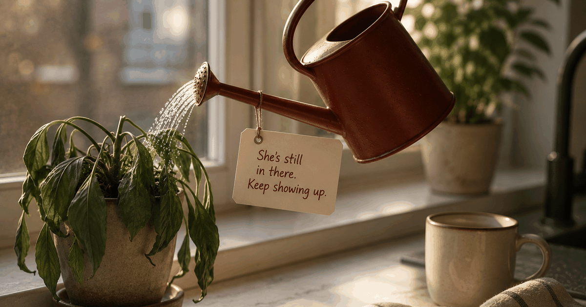

 VN
VNA note from Vadim — Dad myself, contributing editor at Regular. I watched this happen in my own house before I had a name for it. I write these from a dad's side of the crib — plainly, so you don't lose months guessing like I did. Why trust us.
If your wife has postpartum depression, you are carrying two loads at once: hers and your own. Here's the part almost nobody warns dads about — when the mother has PPD, the partner's risk of developing depression climbs to 24–50% (with anxiety in the 10–17% range), far above the roughly 10% of new fathers who develop depression in a typical postpartum year. This guide covers what PPD actually looks like, four moves that change the trajectory, and why your own mental health is part of the equation — not an afterthought.
What postpartum depression actually looks like
PPD rarely announces itself as sadness. More often it presents as flatness, withdrawal, irritability, an inability to bond with the baby, or a creeping sense that your wife has become a stranger who happens to live in your house. Recognizing it is the first step — because you cannot help what you can't name.
The cultural image of postpartum depression is a woman sobbing in a hospital gown. That happens. It's also the least common version. More often, it looks like this:
She's not bonding. She feeds the baby, changes the baby, goes through all the motions — but she describes it as going through motions. She doesn't light up. She doesn't feel what she expected to feel, and that terrifies her, so she says nothing.
She's irritable, not sad. She snaps. She has no patience for small things. You read it as anger at you. It isn't — it's an overwhelmed nervous system with nowhere to put the overflow.
She's disappeared from the relationship. Not physically. She's right there. But she has nothing left for you — no warmth, no curiosity, no interest in anything outside survival mode. This is the part that quietly reshapes how you both bond — with each other and with the baby — over months.
She's convinced she's failing. PPD comes with a crushing sense of inadequacy. She may not say it directly. She may say it sideways — "I'm not cut out for this," "you'd be fine without me." Listen for those edges.
| How PPD often shows up in her | How it can show up in you (the dad) |
|---|---|
| Flat affect, going through the motions with the baby | Numbness, throwing yourself into work to avoid the house |
| Irritability and short fuse over small things | Irritability read as anger — going to bed angry, waking angrier |
| Withdrawal, no warmth left for the relationship | Isolation; not telling anyone because "she has it worse" |
| A crushing sense of failing as a mother | Feeling you should be coping, so you hide that you aren't |
The part nobody told you about: your own risk
When your wife has postpartum depression, your own risk of depression rises sharply — to somewhere between 24% and 50%. You are not just her support system; you are also a person under extraordinary stress, and the research is clear that you're not immune to what's happening in your home. In the general population, roughly 1 in 10 new fathers develops depression in the first postpartum year (Paulson & Bazemore, JAMA, 2010). But when the mother is depressed, that figure climbs to a 24–50% range for the partner (Goodman, 2004) — the single strongest predictor of paternal depression is maternal depression.
This is the thing almost no one tells dads: maternal and paternal PPD travel together, through sleep deprivation, social isolation, relationship strain, and the invisible weight of being the only functioning adult in the room when the person you love is struggling. It doesn't stay her problem — one struggling partner tends to pull the other down.
Paternal depression usually doesn't look like depression, which is part of why it goes unrecognized. It looks like irritability. Like going numb. Like throwing yourself into work because the house feels unmanageable. Like going to bed angry and waking up angrier without knowing why. If any of that sounds familiar, our piece on new-dad loneliness covers the quieter shape it can take.
You are allowed to be struggling too. Acknowledging it isn't weakness and it isn't selfishness — it's what lets you actually be useful over the long run, not just the next three weeks. Not sure where you're at? A quick new-dad mental-health check can help you put words to it.
What doesn't help (and why you keep trying it anyway)
The instinct to fix PPD quickly — to say the right thing, wait it out silently, or treat it like a temporary bug — consistently makes things worse. PPD is a medical condition, not a mindset, and it responds to specific things. Here's what doesn't work.
"Just try to be more positive." PPD is a neurological event, not a thought pattern. Telling someone with postpartum depression to feel differently is like telling someone with a broken leg to walk it off — it doesn't communicate support, it communicates that you don't believe the illness is real.
Waiting for her to ask for help. She won't — not because she's stubborn, but because the shame and cognitive fog of PPD make it nearly impossible to advocate for yourself. The burden of naming the problem and initiating support lands on whoever is not currently depressed. That's you.
Being her only support. You cannot do this alone, and trying to will exhaust you both until you start resenting each other. The goal is to be one node in a support network — not the entire network. That means building the support before she's well enough to ask for it.
Treating it like it'll pass on its own. Without intervention, postpartum depression often persists for six months to over a year. Early treatment shortens that significantly. Every week of waiting is a week of harder recovery — for her, for the baby, and for your relationship.
What actually helps: four moves that change the trajectory
Four concrete moves change the trajectory more than anything you can say: remove decisions, name the behavior rather than the diagnosis, build outside support early, and look after your own mental health. Do these in order and you turn a slow disappearance into a managed illness.
- Be specific, not open-ended. "What do you need?" is the wrong question — it asks her depleted brain to identify, articulate, and assign a task. "I'm handling dinner and the baby's bath tonight, you don't have to think about either" is the right move. Remove the decision. Execute the logistics. That is care in a language PPD can actually receive.
- Name the behavior, not the diagnosis. Don't open with "I think you have postpartum depression" — it can feel like an accusation. Try: "You seem like you're carrying more than anyone should carry alone. I'm not going anywhere, and I'm worried about you. Can we call your OB together this week?" The word together changes everything.
- Build the support structure before she's ready for it. Research a postpartum therapist who takes your insurance. Call her OB and describe what you're seeing. Find out whether there's a postpartum support group nearby (Postpartum Support International maps these globally). Have the appointment booked before she has to summon the energy to decide. Logistics are love when someone has nothing left.
- Talk to your own doctor. You don't need to be in crisis to bring this up. "My wife has PPD and I've been feeling flat and irritable for the last month" is a complete sentence your doctor needs to hear. If your symptoms have lasted more than two weeks — irritability, numbness, withdrawal, trouble sleeping — that's worth a conversation now, not after she recovers.
A timeline: what usually happens, month by month
The typical arc runs from symptoms that masquerade as baby blues, through an intensifying middle stretch, to real improvement once treatment starts — and it drags on mainly when nothing is tried. Knowing the shape of it helps you act at the right moment instead of waiting.
| Timeframe | What's happening with her | What you can do |
|---|---|---|
| Weeks 1–4 | Symptoms emerge; often mistaken for baby blues, which resolve within about two weeks | Watch the two-week mark. If symptoms continue, bring it up gently |
| Months 1–3 | PPD typically intensifies; emotional withdrawal, bonding difficulties | Name it, build the support structure, get her to her OB or midwife |
| Months 3–6 | With treatment, most women see significant improvement | Be consistent — recovery isn't linear. Check in on yourself too |
| 6+ months | Without treatment, symptoms often persist; relationship strain is high | If nothing has been tried yet, this is overdue — the sooner, the shorter |
Frequently asked questions
How long does postpartum depression last?
Without treatment, postpartum depression often persists for six months to a year or more. With therapy or medication, most women see significant improvement within three to six months. The earlier it's addressed, the shorter the trajectory — which is why not waiting matters.
Can I make my wife's postpartum depression worse?
Certain reactions do make it harder: withdrawing emotionally, pushing her to "snap out of it," adding conflict, or making her feel guilty for struggling. What helps is consistent, low-pressure presence — showing up predictably without expecting her to perform recovery for you.
Should I tell my wife I think she has postpartum depression?
The framing matters more than the message. Avoid "I think you have PPD" — it can feel like a diagnosis and trigger defensiveness. Instead, try: "You seem like you're carrying a lot more than anyone should alone. I'm worried about you. Can we talk to someone together?" The word "together" changes the conversation.
What if I'm also feeling depressed while my wife has PPD?
This is more common than most dads realize. When a mother has postpartum depression, her partner's risk of depression rises to 24–50%, with anxiety in the 10–17% range (Goodman, 2004). You cannot pour from an empty cup. If you're struggling, tell your own doctor — not after she's better, now.
When should my wife see a doctor for postpartum depression?
If symptoms — low mood, inability to bond with the baby, crying, withdrawal, irritability, or feelings of hopelessness — have lasted more than two weeks, that's the signal. An OB, midwife, or GP can screen for PPD and refer to treatment. If she mentions thoughts of harming herself or the baby, that requires immediate professional support — contact her doctor or find mental-health support in your country.
How does my wife's postpartum depression affect our relationship?
PPD strains couple satisfaction because it reduces the emotional availability of both partners at once — and a struggling partner has less to give back, which is part of why maternal PPD raises paternal depression risk. Small, daily connection rather than big talks is what tends to hold couples through it.
Keep readingPaternal postpartum depression: 1 in 5 dads · New-dad mental-health check · How to reconnect with your wife after a baby · How your relationship affects bonding with the baby
Contributing editor at Regular, and a dad himself. Writes the honest, from-a-dad's-side pieces on closeness, sex and the messy first year.
About Regular — the relationship app for new dads, built by a small team of parents who needed it themselves. Small, science-backed moves with your partner, not big talks.